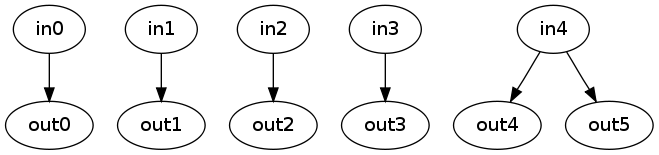
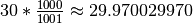

The extract.py script will take an input video and extract all the frames from it as JPEG files. It can give you just a particular range of the frames, and it can change the frame rate by Linear Frame Sampling. So for instance, if you want half as many frames as there are in the input, it will take every other frame. If you want twice as many frames, it will take every frame twice. It can also select frames by time, not just frame number.
extract.py places an emphasis on correctness rather than speed. It uses the ffmpeg program to extract all of the frames in the input video, at the original frame rate. Only then does it select particular frames to copy, or change frame rates. This is because ffmpeg is not totally reliable when you ask it to change rates. It is used because of its very extensive support for video formats.
When it extracts frames from video, ffmpeg starts numbering them from 1. But for our purposes, it’s more useful to have them numbered from 0. If this is a problem, it wouldn’t be too hard to add an option to change this.
extract.py doesn’t ever “make up” image data. All it can do is leave out or duplicate frames. This might lead to problems with e.g. change detection. For example, take a video stream that has been converted from 25 to 30 frames per second:

The changes between frame out4 and frame out5 will always be zero! So that means that, for example, camN_dyn_objM will have a spurious zero, one time out of every 6 samples.
I’m not sure about the right way to deal with this.
The extract.py script extracts frames from a video in a controllable way. It is called like this:
extract.py [options] input_movie output_format
| Format | Result | Comment |
|---|---|---|
| img_%d.jpg | img_99.jpg | Commonly used in our projects. |
| img_%05d.jpg | img_00099.jpg | Adds zeros until exactly 5 digits long—Usually sorts in a better way than above. |
| img_%5d.jpg | img_ 99.jpg | Adds spaces till 5 characters long—usually not what you want. |
After extracting all the frames from the input, which are numbered starting with 0, take only the frames from BEGIN to END inclusive. They are renumbered to start with 0 in the output directory, so if you said extract.py --take 10-20 infile.avi out%d.jpg, then you would get out0.jpg through out10.jpg (eleven frames). This is not particularly efficient, see this discussion.
After extracting all the frames from the input, take only the frames that fall between BEGIN and END seconds from the start of the video. The video is assumed to be at 29.97 frames per second for this calculation. For example, if you said extract.py --take-times 0-15.5 infile.avi out%d.jpg, then you would get out0.jpg through out464.jpg (465 frames). If you’re counting frames, you should know that the American standard frame rate is actually not 29.97 but  frames per second. This is only important if you have many thousands of frames.
Change how many frames there will be in the output, by stretching or squishing time—that is, by changing the frame rate. If your input has 100 frames and you say –stretch-to 200, then the output will have two copies of each frame. This option is applied after --take or --take-times, so extract.py will first take the frames that you select, and then stretch or squish those frames to fill the output requirement.
Normally, the output frames are renumbered so that the first frame in the given bounds is frame 0. --keep-numbers overrides this, so that the output frames have the same numbers as the bounds you specified (although this is not any faster than normal: [1]). So if you say extract.py --take 10-20 --keep-numbers infile.avi out%d.jpg, the output files will be out10.jpg through out20.jpg.
If you use this option with --stretch-to, then the first frame number will be the same as the first number you specify with --take, but the last number will be different because there is a different number of frames.
| [1] | Under the hood, there is still renumbering happening, because ffmpeg numbers frames starting with 1 but we start them with 0. So, unfortunately, --keep-numbers is not any faster than the normal mode. |